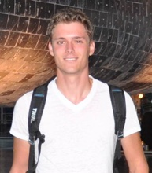

Jakub Hladik

Computer Engineering, Iowa State University
107 University Village Unit F
Ames, IA 50010
319-823-0565
jhladik@iastate.edu
Education
Iowa State University, College of Engineering, Ames, Iowa
- Degree: Bachelor of Science in Computer Engineering
- Graduation Date: December 2017
- GPA: 3.57
Ellsworth Community College, Iowa Falls, Iowa
- Degree: Associate of Science in Engineering
- Graduation Date: May 2015
- GPA: 3.90
Employment
- Tutor, Iowa State University, Ames, Iowa (Since 2016)
- Helped other student understand lecture material and enhance their studies, especially in physics.
- Lab Monitor, ECpE Department, Iowa State University, Ames, Iowa (Fall 2015)
- Inspected and maintained printers and other lab equipment.
- Tutor, Ellsworth Community College, Iowa Falls, Iowa (2014-2015)
- Discussed math and physics problems with students and improved their academic standings.
- Receptionist, Dale Howard Family Activity Center, Iowa Falls, Iowa (2014-2015)
- Provided customer assistance and facility surveillance.
- Software Developer, HLASPOL s.r.o., Povrly, Czech Republic (Summer 2013)
- Introduced and implemented barcode system that reduced order and shipment processing time by ninety percent.
Skills
- Adaptive self-learner, ability to work in multicultural settings, goal-driven individual
- Fluent in following languages: English, Czech
- Programming: Java, C, Python, SQL, PHP, HTML, CSS, Verilog
- Software: Adobe Photoshop, Microsoft Office, UNIX, Quartus II
Projects
- Current Projects:
- Accelerometer-Gyroscope glove for controlling a quadcopter
- Past Projects:
- Lane Drift Error Measurement for Road Vehicles
- Spacial Gravity Simulation
Activities and Leadership
- Iowa State University:
- Dean's List
- SpaceX Hyperloop Pod Competition Team Member
- Ellsworth Community College:
- Graduating with High Honors (2015), Recognition of the Iowa Falls Rotary Club for Scholastic and Personal Leadership Achievements (2015), Dean’s List (2014 and 2015), Phi Theta Kappa Honor Society Member (Since 2014)
- Summer Middle School STEM Camp Assistant (Summer 2014)
- AGWSR High School:
- First Tech Challenge Team Coach (2012-2013)